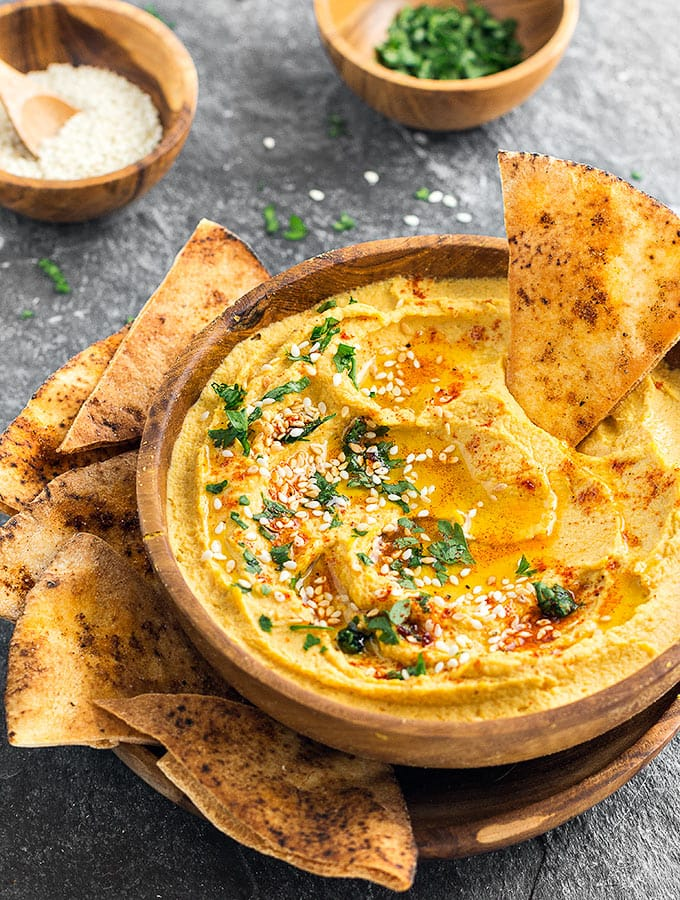

Savory Pumpkin Hummus

Description
I tinkered a bit with what I found in other recipes and this is the
result. I think I like my results. I stirred in a small handful of
tamari-flavored pumpkin seeds just before serving (couldn't find plain
ones) and sprinkled a bit of paprika on top to make it look nice.
Ingredients
- 2 table spoons lemon juice
- 2 tablespoons tahini
- 3 cloves garlic
- 3/4 teaspoon salt
- 2 cans garbanzo beans, drained
- 2 teaspoons extra-virgin olive oil
- 1 can pumpkin puree
- 1 teaspoon ground cumin
- 1/2 teaspoon cayenne pepper
- 1/4 cup toasted pumpkin seed kernels, or more to taste
- 1 pinch paprika
Steps
- Pulse lemon juice, tahini, garlic, and salt in food processor.
- Add garbanzo beans and olive oil and pulse until smooth.
- Add pumpkin, cumin, and cayenne pepper; process until blended.
- Transfer hummus to contain with a lid and refrigerate.
- Fold pumpkin seeds into hummus; garnish with paprika.